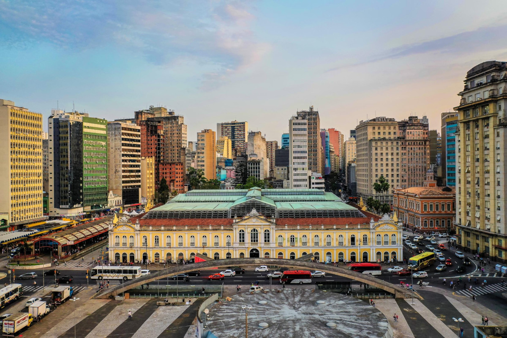

O Centro Histórico é um bairro da cidade brasileira de Porto Alegre, capital do estado do Rio Grande do Sul. Foi criado pela lei 2022 de 7 de dezembro de 1959 com o nome de Centro e alterado pela lei 4685 de 21 de dezembro de 1979. Em 22 de janeiro de 2008 sua denominação atual foi fixada pela lei nº 10.364.[1] Seus bairros vizinhos são: Cidade Baixa, Farroupilha, Bom Fim, Independência, Floresta e Praia de Belas.
O Centro Histórico é a mais antiga área urbanizada de Porto Alegre, e desde sua origem tem sido o seu principal foco vital, sendo a sede da governança municipal e estadual e local de concentração de comércio, bancos, museus e centros culturais. É uma região carregada de história, com um grande número de edificações inventariadas ou tombadas em nível municipal, estadual ou nacional, que ilustram todas as fases evolutivas da arquitetura de Porto Alegre, com muitos exemplares de importância superlativa. Densamente edificado, na segunda metade do século XX começou a experimentar uma degradação progressiva, com a proliferação de comércio ambulante ilegal, deterioração de edifícios históricos, êxodo populacional, problemas de segurança e higiene e congestionamento de tráfego. Desde então tem sido alvo de uma série de projetos de fomento e revitalização, que trouxeram resultados positivos, mas muitos problemas ainda permanecem irresolvidos e cercados de controvérsia.
